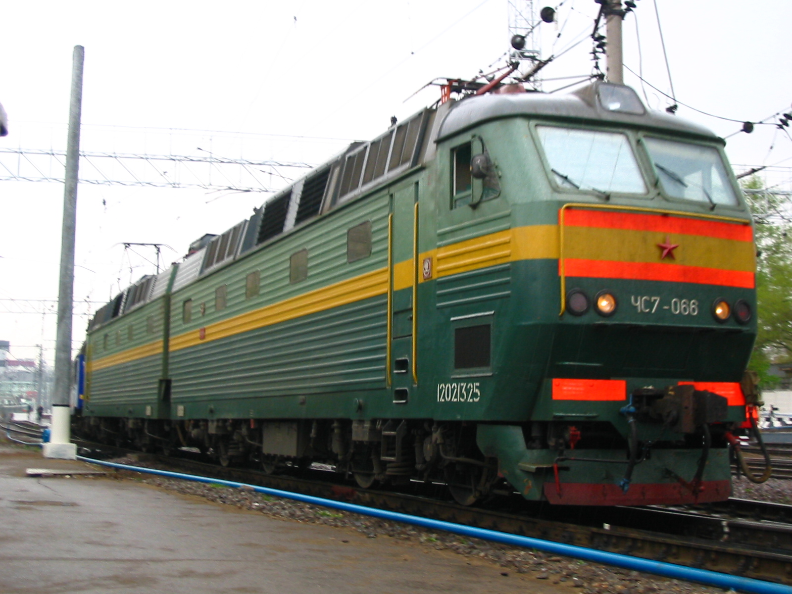

Пассажирский электровоз — завод Škoda (Пльзень)
ЧС7 — мощный пассажирский двухсекционный восьмиосный электровоз постоянного тока напряжением 3 кВ, один из самых сильных пассажирских локомотивов постоянного тока на пространстве бывшего СССР. Выпускался с 1983 по 1998 год на чехословацком (позднее чешском) заводе Škoda в Пльзене; обозначение «ЧС» означает «Чехословацкая постройка». Сцепной вес локомотива — 172 тонны, конструкционная скорость — 180 км/ч, сила тяги при трогании — 320,2 кН, а часовая мощность восьми тяговых двигателей достигает 8×900 кВт. Электровозы этого типа работали в СССР, а затем в России (Московская и Южно-Уральская дороги) и на Украине, где многие машины остаются в эксплуатации и сегодня.